화학분석기사(구) (2011-10-02 기출문제)
1과목: 일반화학
1. 화학식과 그 명칭을 잘못 연결한 것은?
- C3H8 - 프로판
- C4H10- 펜탄
- C6H14- 헥산
- C8H18 - 옥탄
(정답률: 93%)

2. 0.52% 해리되는 2.5M 약한 산성 용액의 산 해리상수(Ka) 값은?
- 6.8×10-5
- 1.1×10-5
- 0.11
- 1.3×10-2
(정답률: 54%)
3. 다음은 질산을 생성하는 0stwald 공정을 나타낸 화학반응식이다. 균형이 맞추어진 화학 반응식의 반응물과 생성물의 계수 a, b, c, d 가 옳게 나열된 것은?
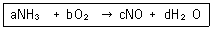
- a=2 b=3 c=2 d=3
- a=6 b=4 c=5 d=6
- a=4 b=5 c=4 d=6
- a=1 b=1 c=1 d=1
(정답률: 88%)
4. 222Rn 에 관한 내용 중 틀린 것은? (단, 222Rn 의 원자번호는 86 이다.)
- 양성자수 = 86
- 중성자수 = 134
- 전자수 = 86
- 질량수 = 222
(정답률: 91%)
5. 다음 중 수소의 질량 백분율(%)이 가장 큰 것은?
- HCl
- H2O
- H2SO4
- H2S
(정답률: 86%)
6. 다음 물질을 전해질의 세기가 강한 것부터 약해지는 순서로 나열한 것은?
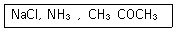
- NaCl ＞ CH3COCH3 ＞ NH3
- NaCl ＞ NH3 ＞ CH3COCH3
- CH3COCH3 ＞ NH3 ＞ NaCl
- CH3COCH3 ＞ NaCl ＞ NH3
(정답률: 69%)
7. Ca(HCO3)2에서 탄소의 산화수는 얼마인가?
- +2
- +3
- +4
- +5
(정답률: 72%)
8. [Fe2+]=0.020M 이고 [Cd2+]=0.20M 일 때 298K에서 다음 산화-환원 반응의 전지전위(V)는?
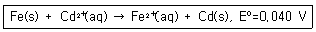
- +0.099
- +0.069
- +0.039
- +0.011
(정답률: 68%)
9. 다음과 같은 반응에 관련되는 화학종의 산화수 변화로 옳은 것은?
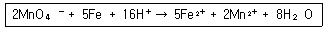
- Mn : +5 → +2
- 0 : -2 → 0
- Fe : 0 → +2
- H : +1 → 0
(정답률: 89%)
10. 몰질량이 162g/mol 이며 백분율 질량 성분비가 탄소 74.0%, 수소 8.7%, 질소 17.3% 인 화합물의 분자식은? (단, 탄소, 수소, 질소의 원자량은 각각 12.0amu, 1.0amu, 14.0amu 이다.)
- C11H16N
- C10H14N2
- C9H26N4
- C8H24N3
(정답률: 83%)
11. 르샤틀리에의 원리와 관련하여 평형상태에 있는 다음과 같은 반응계의 부피를 감소시키면 어떠한 반응이 일어나겠는가?
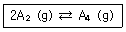
- 전체압력이 증가하므로, 반응은 정방향으로 진행된다.
- 전체압력이 감소하므로, 반응은 역방향으로 진행된다.
- 전체압력이 증가하므로, 반응은 역방향으로 진행된다.
- 전체압력이 감소하므로, 반응은 정방향으로 진행된다.
(정답률: 74%)
12. 다음 반응식에서 산화, 환원에 대한 설명 중 틀린것은?
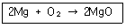
- Mg 은 산화되는 물질이다.
- O2 는 환원되는 물질이다.
- O2 는 환원제로 작용한다.
- Mg 은 환원제로 작용한다.
(정답률: 85%)
13. 다음 반응에서 Kp(부분 압력으로 나타낸 평형상수)를 평형상수(K)로 나타내면?
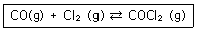
- K(RT)
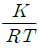
- K(RT)2
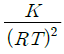
(정답률: 72%)
14. S, Cl, F를 원자 반경이 작은 것부터 증가되는 순서로 배열한 것은?
- Cl, S, F
- Cl, F, S
- F, S, Cl
- F, Cl, S
(정답률: 86%)
15. 산소분자(O2) 10.00몰은 산소분자(O2)와 산소원자(O)가 각각 몇 개인가? (단, 아보가드로수는 6.022 × 1023 개 이다.)
- 산소분자 10.00 개, 산소원자 20.00 개
- 산소분자 6.022 × 1024 개, 산소원자 20.00 개
- 산소분자 6.022 × 1024 개, 산소원자 10.00 개
- 산소분자 6.022 × 1024 개, 산소원자 2 × 6.022 × 1024 개
(정답률: 81%)
16. 납축전지의 전체 반응식은 다음과 같다. 산화-환원식을 이용하여 계수를 맞추고 반응식을 완결하면 PbSO4(s) 의 계수는 얼마인가?
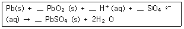
- 1
- 2
- 3
- 4
(정답률: 80%)
17. C6H14 에는 몇 개의 구조 이성질체(isomers)가 존재하는가?
- 3 개
- 4 개
- 5 개
- 6 개
(정답률: 72%)
18. 이성질체에 대한 설명 중 틀린 것은?
- 동일한 분자식을 가진다.
- 실험식이 다른 물질이다.
- 구조가 다른 물질이다.
- 물리적 성질이 다른 물질이다.
(정답률: 85%)
19. 바닥상태 전자배치를 나타낸 것 중 틀린 것은?
- He : 1s2
- Li : 1s2 2s1
- C : 1S2 2s1 2px12py1
- O : 1s2 2s2 2px22py12pz1
(정답률: 87%)
20. 0.25M NaCl 용액 350mL 에는 약 몇 g 의 NaCl이 녹아 있는가? (단, 원자량은 Na 22.99g/mol, Cl 35.45g/mol 이다.)
- 5.11g
- 14.6g
- 41.7g
- 87.5g
(정답률: 83%)
2과목: 분석화학
21. 다음 산화환원 반응에 대한 설명 중 틀린 것은?
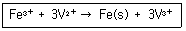
- Fe3+ 의 전자수가 증가되었다.
- Fe3+ 가 환원되었다.
- Fe3+ 는 산화제이다.
- Fe(s)의 산화수는 3이다.
(정답률: 79%)
22. 산해리상수(Ka)가 1.0×10-3 인 약산(HA)의 농도가 0.1M 일 때의 해리 분율(dissociation fraction)을 구하면?
- 10%
- 20%
- 30%
- 40%
(정답률: 59%)
23. 이산화염소의 산화반응에 대한 화학 반응식에서 () 안에 적합한 화학반응 계수를 차례대로 옳게 나타낸것은?(오류 신고가 접수된 문제입니다. 반드시 정답과 해설을 확인하시기 바랍니다.)
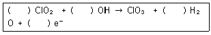
- 1, 1, 1, 1
- 1, 2, 1, 1
- 2, 2, 2, 1
- 1, 2, 1, 2
(정답률: 63%)
24. 산(acid)에 일반적인 설명으로 옳은 것은?
- 알코올은 산성용액으로 알코올의 특징을 나타내는 OH의 H 가 쉽게 해리된다.
- 페놀은 중성용액으로 OH 의 H 는 해리되지 않는 다.
- 물 속에서 H+ 는 H3O+ 로 존재한다.
- 디에틸에테르는 산성 용액으로 H 가 쉽게 해리된다.
(정답률: 82%)
25. 산성용액하에서 0.1M 과망간산칼륨 용액을 사용하여 미지의 황산철(Ⅱ) 용액을 적정하였다. 이와 관련된 반응식이 다음과 같을 때, 사용된 과망간산칼륨 용액의 노르말농도(N)는 얼마인가?
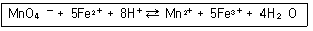
- 0.1
- 0.3
- 0.4
- 0.5
(정답률: 67%)
26. 증류수에 Hg2(IO3)2 로 포화시킨 용액에 KNO3 와 같은 염을 첨가하면 용해도가 증가한다. 이를 설명할 수 있는 요인으로 가장 적합한 것은?
- 가리움 효과
- 착물형성
- 르샤틀리에의 원리
- 이온세기
(정답률: 59%)
27. Cd2+ 이온이 4 분자의 암모니아(NH3)와 반응하는 경우와 2분자의 에틸렌디아민 (H2NCH2CH2NH2)과 반응하는 경우에 대한 설명으로 옳은 것은?
- 엔탈피 변화는 두 경우 도두 비슷하다.
- 엔트로피 변화는 두 경우 모두 비슷하다.
- 자유에너지 변화는 두 경우 모두 비슷하다.
- 암모니아와 반응하는 경우 더 안정한 금속착물을 형성한다.
(정답률: 68%)
28. 기본적인 SI 단위가 아닌 유도된 SI 단위에 해당하는 것은?
- m(미터)
- K(켈빈)
- mol(몰)
- Pa(파스칼)
(정답률: 73%)
29. 다음 반응에 대한 화학평형상수 K를 옳게 나타낸것은?
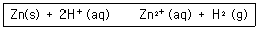
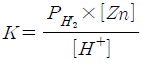
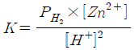
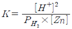
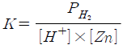
(정답률: 80%)
30. 다음 각각의 반쪽 반응식에서 비교할 때 강한 산 화제와 강한 환원제를 모두 옳게 나타낸 것은?
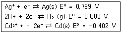
- 강한 산화제 : Ag+ ; 강한 환원제 ; Ag(s)
- 강한 산화제 : H+ ; 강한 환원제 ; H2(g)
- 강한 산화제 : Cd2+ ; 강한 환원제 ; Ag(s)
- 강한 산화제 : Ag+ ; 강한 환원제 ; Cd(s)
(정답률: 79%)
31. 다음과 같은 전기화학전지에 대한 설명으로 틀린것은?
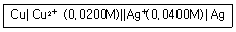
- 한줄 수직선(ㅣ)은 전위가 발생하는 상 경계나 전위가 발생 할 수 있는 접촉면이다.
- 이중 수직선(ㅣㅣ)은 염다리의 양 끝에 있는 두 개의 상경계이다.
- 0.0400M 은 은이온(Ag+)의 농도이다.
- 구리(Cu)는 환원전극이다.
(정답률: 76%)
32. 다음 갈바니 전지의 전지 전압 (Ecell)은 얼마인가?
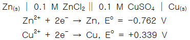
- 0.55⑤V
- 0.7340V
- 1.101V
- 1.651V
(정답률: 84%)
33. KH2PO4 와 KOH 로 구성된 혼합용액의 전하 균형식으로 옳은 것은?
- [H+] + [K+] = [OH-] + [H2PO4-] + 2[HPO42-]+ 3[PO43-]
- 2[H+] + [K+] = [OH-] + [H2PO4-] + 2[HPO42-]+ 3[PO43-]
- [H+] + [K+] = [OH-] + [H2PO4-] + [HPO42-] +[PO43-]
- 2[H+] + [K+] = [PO43-]
(정답률: 60%)
34. 0.122M 인 약산 (HA, pKa=9.747) 59.6mL 용액에 0.0431M 의 NaOH 용액 몇 mL를 첨가하면 pH 8.00 용액을 만들 수 있는가?
- 29.7
- 2.97
- 0.297
- 0.0297
(정답률: 49%)
35. HCl 용액을 표준화하기 위해 사용한 Na2CO3 가 완전히 건조되지 않아서 물이 포함되어 있다면 이것을 사용하여 제조된 HCl 표준용액의 농도는?
- 참값보다 높아진다.
- 참값보다 낮아진다.
- 참값과 같아진다.
- 참값의 1/2이 된다.
(정답률: 83%)
36. 활동도는 용액 속에 존재하는 화학종의 실제 농도 또는 유효농도를 나타낸다. 다음 중 활동도 계수의 성질이 아닌 것은? (단, al = fl[i] 이고 ai 는 화학종 i의 활동도, fl 는 i의 활동도 계수, [i] 는 i 의 농도이다.)
- 동일한 수화 이온 반지름을 갖는 경우 + 이온이든 - 이온이든 전하수가 같으면 fl 의 값은 같다.
- 수화된 이온의 반지름이 작으면 작을수록 fl 의 값도 작아진다.
- 이온의 세기가 증가하면 fl 의 값도 증가한다.
- 무한히 묽은 용액일 경우에는 fl = 1 이다.
(정답률: 62%)
37. 50.00mL 의 0.1000M I-를 0.2000M Ag+ 로 적정하고자 한다. Ag+를 25.00mL 첨가하였을 때, I-의 농도(mol/L)를 나타내는 식은?
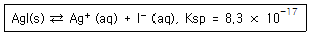
- 0.1000×0.⑤000/75.000
- 0.1000/75.000
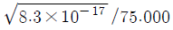
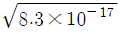
(정답률: 62%)
38. [표]의 표준 환원 전위를 참고할 때 다음 중 가장 강한 산화제는?
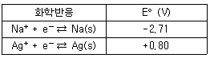
- Na+
- Ag+
- Na(s)
- Ag(s)
(정답률: 75%)
39. 1.74mmol의 전자가 2.52V 의 전위차를 통하여 이동할 때 필요한 일은 약 몇 J 인가?
- 423
- 523
- 623
- 723
(정답률: 65%)
40. 패러데이 상수는 전류량과 반응한 화합물의 양과의 관계를 알아내는데 사용되는 값으로 96485가 자주 사용되고 있다. 이러한 패러데이 상수의 단위(unit)로 알맞은 것은?
- C/mol
- A/mol
- C/g
- A/g
(정답률: 85%)
3과목: 기기분석I
41. 어떤 스펙트럼의 신호대-잡음비가 6/1이다. 신호대-잡음비를 30/1로 증가시키기 위해서는 몇 개의 스펙트럼을 평균하여야 하는가?
- 5
- 10
- 20
- 25
(정답률: 87%)
42. 100MHz의 1H-핵자기공명(NMR)분광기를 사용하여 측정할 때, 니트로에탄에 있는 메틸기의 화학적 이동(chemical shift)파라미터 δ는 1.6ppm 이고 스핀-스핀 짝지음 상수 J 는 7.4Hz 이었다. 300MHz 의 1H-NMR 분광기를 사용하여 측정한 메틸기의 δ 와 J 값을 옳게 나타낸 것은?
- δ = 1.6ppm, J = 7.4Hz
- δ = 1.6ppm, J = 22.2Hz
- δ = 4.8ppm, J = 7.4Hz
- δ = 4.8ppm, J = 22.2Hz
(정답률: 54%)
43. 원자흡수분광법에서 바탕보정을 위해 사용하는 방법이 아닌 것은?
- Zeeman 효과 사용 바탕보정법
- 연속광원(D2 lamp)사용 바탕보정법
- 선형회귀(linear regression) 사용 바탕보정법
- 광원 자체반전(self-reversal) 사용 바탕보정법
(정답률: 69%)
44. 분광광도법 분석의 정확도와 정밀도는 기기와 관련된 불확정도 또는 잡음에 의해 종종 제한을 받는다. 투광도 측정에서 나타나는 불확정도의 근원과 이러한 것이 나타날 수 있는 기기를 연결한 것 중 잘못 연결된 것은?
- 제한된 눈금 분해능 - 값싼 광도계와 분광광도계
- 열 검출기의 Johnson 잡음 - 적외선/근적외선 분광광도계, 광도계
- 셀 위치의 불확정도 - 좋은 품질의 자외선/가시광선, 적외선 분광광도계
- 광원의 깜박이 잡음 - 좋은 품질의 광도계, 분광광도계
(정답률: 66%)
45. 특수한 금속에 빛이 닿으면 빛의 에너지를 흡수하여 금속중의 자유 전자가 금속 표면에 방출되는 성질을 무엇이라 하는가?
- Rayleigh 산란
- Raman 산란
- Tyndall 효과
- 광전효과
(정답률: 70%)
46. 원자흡수분광법(AAS)에서 발견되는 이온화 방해 효과를 발생시키는 물질로서 비교적 낮은 불꽃 온도에서 분석시 문제가 될 수 있는 원소는?
- sodium(Na)
- magnesium(Mg)
- copper(Cu)
- strontium(Sr)
(정답률: 66%)
47. 원자 방출분광법에 사용되는 기압식 시료도입 장치 중 잘 막히지 않아 슬러리 시료에 특히 유용한 장치는?
- 동심관 기압식 분무기
- 교차-흐름 기압식 분무기
- 소결판 기압식 분무기
- 바빙턴(babington) 기압식 분무기
(정답률: 52%)
48. 고체시료를 가지고 IR 스펙트럼을 측정하고자 한다. 이때, 시료를 어떤 방법으로 처리하면 가장 적절한 가?
- 직접 측정
- 물속에 녹여서 측정
- KBr 펠렛을 만들어서 측정
- 유리용기에 넣어 측정
(정답률: 75%)
49. 어떤 착물 용액은 470nm에서 9.32×103 L/molㆍcm 의 몰흡광계수를 갖는다. 1.0cm 셀에 들어있는 6.24×10-5M 착물 용액의 흡광도는 얼마인가?
- 0.382
- 0.582
- 0.882
- 1.180
(정답률: 79%)
50. 다음 중 13C 핵자기공명(NMR) 분광법이 1H NMR 분광법에 비해 가지는 장점이 아닌 것은?
- 봉우리의 겹침이 적게 일어난다.
- 1H NMR 분광법보다 감도가 좋다.
- 분자 주위에 대한 것보다 분자 골격에 대한 정보를 알려준다.
- 인접한 탄소끼리의 13C-13C 짝지음이나 13C-12C 짝지음이 거의 관찰되지 않는다.
(정답률: 72%)
51. 복사선 에너지를 전기신호로 변환시키는 변환기와 관련이 가장 적은 것은?
- 섬광 계수기
- 속빈 음극등
- 반도체 변환기
- 기체 - 충전 변환기
(정답률: 76%)
52. 레이저는 분석기기에 매우 유용한 광원으로 사용된다. 레이저의 특성이 아닌 것은?
- 센 세기
- 넓은 에너지 범위
- 간섭성(coherent)
- 좁은 띠너비(bandwidth)
(정답률: 59%)
53. 방향족 탄화수소의 자외선 스펙트럼에서 나타나는 전형적인 전자 전이는?
- б → б*
- π → π*
- n → б*
- n → π*
(정답률: 59%)
54. Zeeman 바탕보정법에 대한 설명으로 틀린 것은?
- 강한 자석을 사용한다.
- 편광판을 사용한다.
- 온도변화를 사용한다.
- 바탕용액을 별도로 사용하지 않아도 된다.
(정답률: 43%)
55. 다음 검출기중 다중채널 방식이 아닌 것은?
- 전하-쌍 장치
- 전하-주입 장치
- 규소다이오드 검출기
- 광다이오드 배열 검출기
(정답률: 49%)
56. 복사에너지(파장)를 이용한 기기분석에서 이용되는 파장과 기기분광법이 잘못 연결된 것은?
- 60cm~10m - 핵자기공명분광법
- 0.78~300㎛ - 라만 산란분광법
- 180~780nm - 자외선흡수분광법
- 100Å ~0.1Å - 적외선흡수분광법
(정답률: 54%)
57. X선 분석에서 Bragg식은 다음 중 어떤 현상에 대해 나타낸 식인가?
- 회절
- 편광
- 투과
- 복사
(정답률: 82%)
58. 원자방출 분광법에서는 내부 표준물법이 주로 사용된다. 그 이유로 가장 옳은 설명은?
- 일반적으로 방출분광원이 흡수광원이나 원자화장치보다 불안정하다.
- 매트릭스 등에 의한 원소 상호간 간섭을 줄일 수 있다.
- 신호를 증가시켜, 신호대잡음비와 관련있는 감도를 향상시킬 수 있다.
- 잡음을 감소시켜 신호대잡음비를 증가시킬 수 있다.
(정답률: 65%)
59. 형광분광기에서 들뜸스펙트럼(Excitation spectrum)을 얻는 방법은?
- 들뜸파장을 변화시키면서, 일정한 파장에서 발광세기를 측정한다.
- 들뜸파장과 파장을 동시에 변화시키면서 발광세기를 측정한다.
- 들뜸파장을 고정시키고, 일정한 파장에서 발광세기를 측정한다.
- 들뜸파장을 고정시키고, 파장을 변화시키면서 발광세기를 측정한다.
(정답률: 52%)
60. 유도결합 플라스마 방출 분광법(ICP-AES)은 전기 스파크 방출 분광법에 비해 정밀도가 높은 가장 큰 이유는?
- 플라스마의 온도가 높기 때문이다.
- 직류 플라스마(DCP)처럼 전극을 사용하지 않기 때문이다.
- 플라스마 내에서 들뜬 원자의 머무는 시간이 길기 때문이다.
- 스파크 방출분광법은 미세한 전기의 흐름 차이로도 방출세기가 달라질 수 있기 때문이다.
(정답률: 59%)
4과목: 기기분석II
61. DSC(시차주사열량법:Differential scanning calorimetry)에서 시료물질과 기준물질로 열을 전달하는데 사용되는 열전기판인 콘스탄탄의 주성분은?
- Zn + Cu
- Sn + Cu
- Ni + Cr
- Cu + Ni
(정답률: 64%)
62. 전해전지에 걸어주어야 하는 전압은 네른스트 식에 의해 예상된 것보다 커진다. 여러 요인 중 농도차 분극을 줄이기 위한 방법이 아닌 것은?
- 온도를 높여 준다.
- 전류를 빨리 흘린다.
- 용액을 빨리 저어준다.
- 전극의 표면적을 넓힌다.
(정답률: 55%)
63. 20.0cm 관으로 물질 A와 B를 분리한 결과 A의 머무름 시간은 15.0분, B의 머무름 시간은 17.0분이었고, A와 B의 봉우리 밑 너비는 각각 0.75분, 1.25분이었다면 이 관의 분리능은 얼마인가?
- 1.0
- 2.0
- 3.5
- 4.5
(정답률: 78%)
64. 2-hexanone의 질량분석 토막패턴으로 검출되지 않는 화학종은?
- CH3-CH=CH2+
- (CH2)(CH3)C=OH+
- CH3-C≡O+
- CH3-CH2-CH2-CH2+
(정답률: 53%)
65. 분자질량분석법에서는 기체 상태로 화합물을 이온화시키는 방법으로 전자충격법과 화학적이온화법 등이 이용되고 있다. 이에 대한 설명으로 틀린 것은?
- 전자충격법은 토막내기반응이 일어나 분자이온 봉우리를 쉽게 나타낸다.
- 전자충격법은 기화하기 전에 열분해가 일어날 수 있다.
- 전자충격법 스펙트럼보다 화학적 이온화법 스펙트럼이 단순하다.
- 화학적 이온화법 스펙트럼은 (M+1)+과 (M-1)+ 봉우리가 나타난다.
(정답률: 50%)
66. 표준수소전극(SHE)에 대한 설명으로 틀린 것은?
- 표준수소전극의 전위는 0 이다.
- 수소기체전극의 전위는 용액의 수소이온 활동도에 의존한다.
- 수소기체전극의 전위는 수소 기체의 압력과는 무관하다.
- 표준수소전극은 산화전극 또는 환원전극으로 작용한다.
(정답률: 65%)
67. 이산화탄소의 질량스펙트럼에서 분자이온이 나타나는 질량 대 전하(m/z) 비는 얼마 인가?
- 44
- 28
- 16
- 12
(정답률: 83%)
68. 기체크로마토그래피 검출기 중 니켈-63(63Ni)과 같은 β-선방사체를 사용하며, 할로겐과 같은 전기 음성도가 큰 작용기를 지닌 분자에 특히 감도가 좋고 시료를 크게 변화시키지 않는 검출기는?
- 불꽃 이온화 검출기(FID: flame ionization detector)
- 전자 포착 검출기(ECD: electron capture detector)
- 원자 방출 검출기(AED: atomic emission detector)
- 열전도도 검출기 (TCD: thermal conductiviyu detector)
(정답률: 81%)
69. 전기화학에서 널리 사용되는 포화칼로멜 기준전극의 전극반응은?
- 2H+ + 2e- ⇄ H2(g)
- AgCl(s) + e- ⇄ Ag(s) + Cl-
- Fe(CN)63- + e- ⇄ Fe(CN)64-
- Hg2Cl2(s) + 2e- ⇄ 2Hg(L) + 2Cl-
(정답률: 66%)
70. 금속이나 수용액에서의 전기 전도도에 대한 설명으로 틀린 것은?
- 금속은 온도가 증가하면 전도도가 감소한다.
- 전해질의 수용액에서 온도가 증가하면 전도도는 증가한다.
- 수용액에서 전도도는 이온의 종류에 관계없이 이온의 수에 비례한다.
- 일정 조성의 도체에서 전도도는 길이에 반비례하고 단면적에 비례한다.
(정답률: 63%)
71. 카드늄 전극이 0.0150M Cd+2 용액에 담그어진 경우 반쪽 전지의 전위를 Nernst식을 이용하여 구하면 약 몇 V 인가?
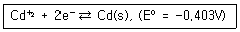
- -0.257
- -0.311
- -0.457
- -0.511
(정답률: 73%)
72. 얻어진 크로마토그램의 인접한 두성분의 머무름 시간이 각각 9.46min(A성분), 9.80min(B성분)이며, 분리관을 그냥 지나치는 성분의 머무름 시간이 1.35min이라면 B성분의 부피비는 얼마인가?
- 5.52
- 6.01
- 6.16
- 6.26
(정답률: 35%)
73. 모세관 전기이동의 특징인 전기삼투 흐름을 억제할 수 있는 가장 적절한 방법은?
- 완충용액에 양이온성 계면활성제를 넣어 준다.
- 표면의 silanol기를 없애기 위하여 트리메틸클로로 실란과 같은 시약으로 모세관 벽 내부에 피막을 입힌다.
- 완충용액에 들어있는 모세관을 가로질러 높은 전압을 걸어준다.
- 실리카/용액 경계면에 전기 이중층을 형성한다.
(정답률: 59%)
74. “화학 7(Chem 7)” 시험은 임상병리실에서 수행되는 시험70% 정도를 차지한다. 이들 중에서 이온선택전극을 사용하여 측정할 수 없는 화학종은?
- 글루코오스
- 염소 이온
- 칼륨 이온
- 총 이산화탄소
(정답률: 65%)
75. 음극 벗김 분석에 대한 설명으로 옳지 않은 것은?
- 유기물의 정량분석에 가장 많이 사용된다.
- 시료물질을 수은전극에 석출시키고 산화시켜 정량 분석한다.
- 표준물 첨가법 등을 적용하여 시료물질의 정량분석에 이용된다.
- 얻어진 전류-전압 그림의 봉우리 면적은 시료물질의 농토에 비례한다.
(정답률: 42%)
76. 전기화학 반응을 하는 활성종(analyte)은 전극표면으로 확산(diffusion)과, 대류(convection), 정전기적 인력(migration) 등에 의해 이동된다(mass transport). 폴라로그래피에서는 확산에 의한 전류만 중요하게 생각한다. 나머지 두 가지 이동을 초소화하기 위한 조치로 적합하지 않은 것은?
- 전해질의 농도를 활성종의 농도에 비해 아주 높게 한다.
- 전극의 면적을 아주 작게 한다.
- 용액을 가열하지 않는다.
- 용액을 저어주거나 흔들지 않는다.
(정답률: 54%)
77. 열무게법의 주요 기기 장치가 아닌 것은?
- 기체 주입 장치
- 자외선 조사기
- 분석 저울
- 전기로
(정답률: 69%)
78. 고분자량의 글루코오스 계열 화합물을 분리하는데 가장 적합한 크로마토그래피 방법은?
- 이온-교환 크로마토그래피
- 크기별 배제 크로마토그래피
- 기체 크로마토그래피
- 분배 크로마토그래피
(정답률: 77%)
79. 다음 질량스펙트럼에서 관찰되는 화합물의 실험식은?
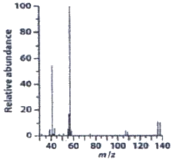
- C4H9Br
- C5H12O4
- C5H6Cl2
- C7H8NO2
(정답률: 61%)
80. 선택 이온 검출법(selected ion monitoring)에 대한 설명으로 틀린 것은?
- 바탕잡음이 감소된다.
- 선택성이 증가한다.
- 신호 대 잡음 비가 향상된다.
- 분석시간이 증가한다.
(정답률: 71%)